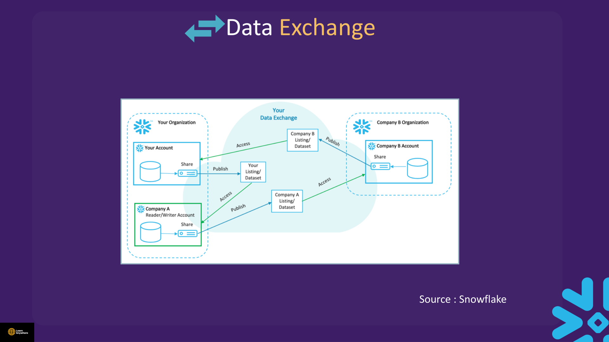
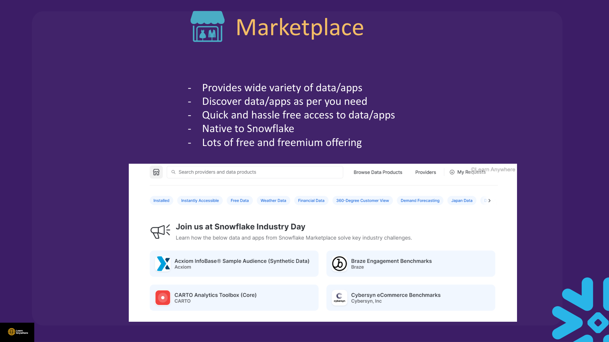
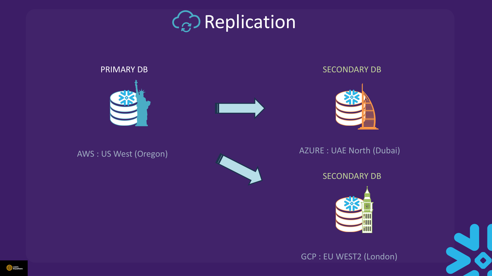
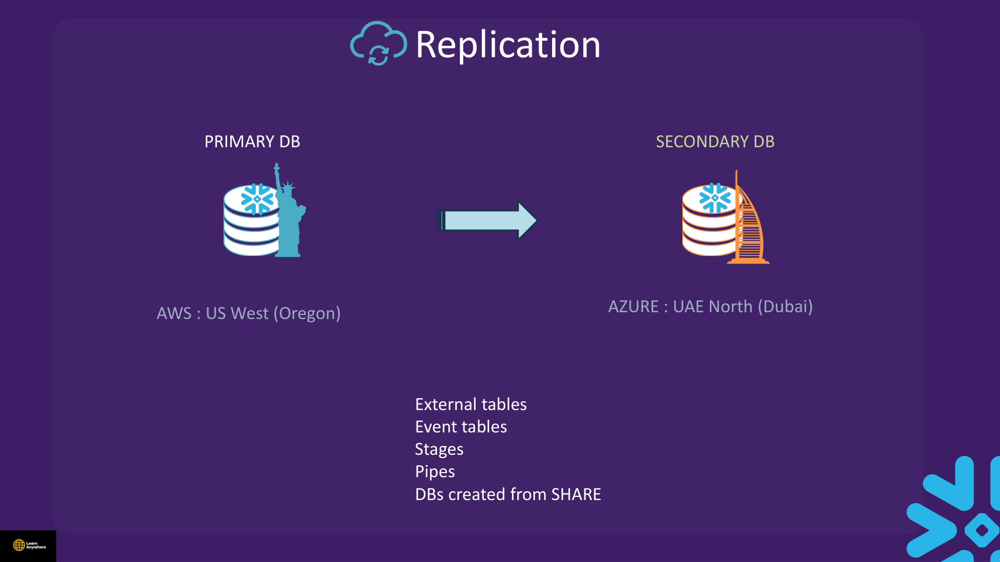

Lectures in this section
Every lecture below links to the notes that cover it.
- Various Share Options with Snowflake 2:30
- Direct Share 5:00
- [Demo] Share Option 7:29 Data Sharing & Partner Connect/Secure Data Sharing.txt
- Listings 3:30
- Demo : Listings 2:52
- Snowflake Data Clean Room 3:01
- Sharing Use Case and How to choose best option 4:59
- Replication 3:45
- Quiz
Listings, Marketplace & Data Exchange
Beyond 1:1 direct shares, Snowflake supports curated distribution models.
Data Exchange
A Data Exchange is data shared between an invited group of entities. You must contact Snowflake Support to enable it. It lets you share with partners and within your own organisation while you keep control of membership and access.

Marketplace
The Snowflake Marketplace provides a wide variety of data, applications, and services. Discover data and apps as you need them, with quick and hassle-free access native to Snowflake. Many offerings are free or freemium.

Data provider workflow
Providers use Provider Studio (Data → Provider Studio in Snowsight). Requires ACCOUNTADMIN or the relevant authorisation. You can create and publish listings and monitor listing performance.
| Model | Audience | Key traits |
|---|---|---|
| Public Marketplace listing | Many potential buyers | Discoverable; free or paid listings; usage monitoring |
| Private listing / Data Exchange | Invited partners | Controlled membership; richer metadata |
| VPS private listing | VPS provider ↔ VPS or non-VPS consumer | 1:1; not publicly searchable; Snowflake Support reviews and enables |
| Cross-cloud auto-fulfillment | Multi-region consumers | Provider enables auto-replicate to consumer regions (listing size limits apply) |
Snowflake Data Clean Room
A Data Clean Room lets two or more parties run approved analytics on combined datasets without exposing raw rows to each other. Policies define which queries/templates are allowed — common in advertising, healthcare, and financial partnerships where regulations forbid copying PII.
- Consumers and providers remain in separate accounts; collaboration rules enforce output constraints.
- Complements secure views and aggregation — designed for joint analysis, not simple read-only sharing.
- Choose clean rooms when both parties need compute on overlapping populations but neither may see the other's raw table.
Sharing Use Case — How to Choose
| Need | Best option | Why |
|---|---|---|
| Partner already on Snowflake, same region | Direct secure share | Zero copy, consumer pays compute, simplest ops |
| Partner has no Snowflake account | Reader account + share | Provider pays compute; still no file exports |
| Monetise dataset publicly | Snowflake Marketplace listing | Discovery, billing, legal framework |
| Internal partner group only | Private Data Exchange | Controlled membership, richer metadata |
| Joint analytics, hide raw PII | Data Clean Room | Policy-bound collaboration |
| DR + local sharing in second region | Replication + share in target | Data physically present for locality/compliance |
| Multi-cloud consumers for listings | Auto-fulfillment | Snowflake replicates product to consumer regions on demand |
Replication
Replication copies database objects to another account (often another region or cloud) for disaster recovery, compliance residency, or to enable cross-region sharing. It is not the same mechanism as live sharing — replication materialises a copy in the target account.

- Replication is only for database objects.
- Privileges granted on the database are not replicated — re-grant in the target account.
- Replicating to a lower edition raises an error (can be overcome with ops workarounds).
- Can replicate to multiple accounts.
- Costs data transfer plus compute.
- Failover / failback (promoted secondary accounts, Business Critical DR) is exam-level overview here — deeper BCDR runbooks live in extras.html.
Objects that do not replicate
These object types are excluded from replication as primary objects:

| Not replicated | Notes |
|---|---|
| External tables | Point to external cloud storage — not copied |
| Event tables | Telemetry objects — excluded |
| Stages | Replicate only when included in a replication or failover group |
| Pipes | Replicate only when included in a replication or failover group |
| Databases created FROM SHARE | Consumer-side share databases are not replication sources |
us-east-1
eu-west-1
SHOW REPLICATION DATABASES;
SHOW REPLICATION ACCOUNTS;Common Mistakes
- Sharing base tables instead of secure views — leaks schema and predicates.
- Forgetting
USAGEgrants on database and schema inside the share. - Expecting consumer to INSERT into shared data — always read-only.
- Trying to re-share data received from another account — not allowed.
- Cross-region direct share without replication — fails region/provider rules.
- Embedding lab passwords in real scripts — rotate immediately.
- Assuming replicated privileges travel with data — they do not.
- Confusing Partner Connect with secure data sharing — different purposes.
Interview questions
Try to answer each one before opening it.
How does secure data sharing work without copying data, and what is the consumer actually querying?Fundamentals
The provider grants read-only access to selected objects via a share object — metadata pointers, not file exports. The consumer creates a database FROM SHARE and queries live provider data through Snowflake's metadata layer. No COPY, FTP, or duplicate storage for the shared tables themselves. The consumer sees current data as the provider updates it — like a shared link, but with RBAC and secure views on the provider side.
Who pays for storage and who pays for compute in a share?Cost
The provider always pays storage — data never leaves their account. When the consumer is a full Snowflake account in the same region, the consumer pays compute (warehouse credits) for queries against the shared database. For reader accounts — managed mini-accounts for partners without a Snowflake contract — the provider typically pays compute as well. Shared databases are read-only on the consumer side regardless of who pays.
When would you use a direct share versus a listing versus Marketplace versus a Data Exchange?Comparison
Direct share — one known Snowflake partner, same region/cloud, simplest ops. Private listing / Data Exchange — invited partner ecosystem with richer metadata and controlled membership. Public Marketplace listing — many potential buyers, discoverable, with billing and legal framework. Direct share is fastest for 1:1; Marketplace scales monetisation; private Exchange suits internal partner groups. All require the same grant discipline: USAGE on DB/schema plus SELECT on shared objects.
When do you need a reader account and who pays?Scenario
Use a reader account when the consumer organisation has no Snowflake contract — you create a managed mini-account with CREATE MANAGED ACCOUNT … TYPE = READER and add it to the share. The provider usually pays both storage (already theirs) and compute for reader queries. Reader accounts still get live read-only access without file exports. For partners who already have Snowflake, a direct share is simpler and shifts compute cost to them.
What object types can be shared, and which cannot?Fundamentals
Shareable: tables, secure views, secure materialised views, dynamic tables, external tables, and Iceberg tables — consumer DB is always read-only. Notable restrictions: databases created FROM SHARE cannot be re-shared (no second-hop), Time Travel on shared objects is not supported for consumers, and cloning a shared database is not supported. Standard (non-secure) views should not be shared — they expose underlying SQL and table references.
Why must you share through a secure view instead of a standard view?Gotcha
A standard view exposes its defining SQL and underlying table/column names to consumers with appropriate privileges — leaking schema structure and filter logic. A secure view hides that definition; consumers see only the result columns you expose. Combine secure views with row access/masking on the provider side before sharing aggregated or safe columns. Secure views protect provider logic — they do not replace governance if you grant too many base-table columns.
How does cross-region or cross-cloud sharing work, and what role does replication play?Scenario
Direct shares require same cloud and compatible region — cross-region direct share without preparation fails. For cross-region collaboration, replicate the database to a secondary account in the target region, then create a local share there. Listings can use auto-fulfillment to replicate product data to consumer regions on demand. Replication materialises a copy (unlike live same-region sharing) and privileges are not replicated — re-grant in the target account.
What problem do data clean rooms solve?Fundamentals
Clean rooms let two or more parties run approved analytics on combined datasets without exposing raw rows to each other — common in advertising, healthcare, and financial partnerships where regulations forbid copying PII. Policies define which query templates are allowed and constrain outputs. Both parties remain in separate accounts; collaboration rules enforce what each side can see. Choose clean rooms when joint analytics is needed but neither party may see the other's raw table — not for simple read-only sharing.
Can you share from a Business Critical account to a Standard-edition consumer?Gotcha
Sharing data to a lower edition consumer is generally supported for read-only secure shares — the consumer queries through their own account edition. Restrictions apply to replication: you cannot replicate to a lower edition (with limited ops workarounds). VPS private listings require a Snowflake Support workflow. Tri-Secret Secure and PrivateLink features on the provider side do not force the consumer onto Business Critical — but cross-edition governance features like masking policies require Enterprise+ on the querying side.
What is Partner Connect and how does it differ from secure data sharing?Comparison
Partner Connect (Snowsight) is a guided onboarding path for third-party integrations — BI tools, ETL partners, trial setups — wiring external services into your account. It is not a data-sharing transport. Secure shares, listings, and clean rooms grant data access between Snowflake accounts; Partner Connect provisions third-party tool connections. For the exam, treat Partner Connect as a convenience launcher for certified integrations, not a substitute for shares or Marketplace listings.
List every major restriction on shared databases that appears on the exam.Gotcha
Shared databases are read-only — no insert, update, or object creation. No limit on shares or consumer accounts. Cannot clone shared databases/schemas/tables. Time Travel not supported. Cannot edit comments. Cannot re-share (no second hop). Shared databases cannot be replicated. One database per share on the consumer side. BC-to-non-BC sharing blocked unless overridden. Same cloud provider and same region required. VPS sharing not supported.
Which object types do not replicate, and are privileges replicated?Fundamentals
Replication covers database objects only. Privileges are not replicated — re-grant in the target account. Objects that do not replicate: external tables, event tables, stages, pipes (unless in a replication/failover group), and databases created from a share. Replicating to a lower edition raises an error. Replication costs data transfer plus compute. Can replicate to multiple accounts/regions — e.g. primary in AWS US West Oregon to secondaries in Azure UAE North and GCP EU West 2 London.
Hands-on practice
Run these in a trial account on an X-Small warehouse with AUTO_SUSPEND = 60. Clean up when you finish.
-
Create table
share_demowith sample rows, then create secure viewshare_demo_vthat filters to adults only (age >= 18). Verify the view returns fewer rows than the base table.Base table has 2 rows (John Doe age 30, Jane Doe age 25). Secure view returns 2 rows (both adults). If you add a minor row, the view excludes them.
Show solutionSQL
USE ROLE ACCOUNTADMIN; USE WAREHOUSE COMPUTE_WH; CREATE DATABASE IF NOT EXISTS <YOUR_DB>; CREATE SCHEMA IF NOT EXISTS <YOUR_DB>.<YOUR_SCHEMA>; CREATE OR REPLACE TABLE share_demo (id INT, name STRING, age INT); INSERT INTO share_demo VALUES (1, 'John Doe', 30), (2, 'Jane Doe', 25); CREATE OR REPLACE SECURE VIEW share_demo_v AS SELECT id, name FROM share_demo WHERE age >= 18; SELECT COUNT(*) FROM share_demo; -- expect 2 SELECT COUNT(*) FROM share_demo_v; -- expect 2 -
Create share
share_lab, grant USAGE on database and schema plus SELECT on the secure view, and inspect withSHOW GRANTS TO SHARE share_lab. If you have a second account, add it withALTER SHARE … ADD ACCOUNTS; otherwise stop after verifying grants.SHOW GRANTS TO SHARE share_lablists USAGE on database, USAGE on schema, and SELECT onshare_demo_v. Missing any of the three causes consumer-side errors.Show solutionSQL
CREATE OR REPLACE SHARE share_lab; USE ROLE SECURITYADMIN; GRANT USAGE ON DATABASE <YOUR_DB> TO SHARE share_lab; GRANT USAGE ON SCHEMA <YOUR_DB>.<YOUR_SCHEMA> TO SHARE share_lab; GRANT SELECT ON VIEW <YOUR_DB>.<YOUR_SCHEMA>.share_demo_v TO SHARE share_lab; SHOW GRANTS TO SHARE share_lab; -- Optional: add consumer account -- USE ROLE ACCOUNTADMIN; -- ALTER SHARE share_lab ADD ACCOUNTS = <CONSUMER_ACCOUNT_ID>; -
Confirm the consumer database would be read-only: attempt an INSERT into
share_demo_vas the provider and observe the error.INSERT fails — views and shared objects are not writable by consumers; even on the provider side, inserting into a secure view may fail depending on view definition. Consumers creating a database FROM SHARE get a read-only shared database.
Show solutionSQL
INSERT INTO share_demo_v (id, name) VALUES (99, 'Should Fail'); -- Expect error: DML operation not supported on view or insufficient privileges -- Consumer perspective (in consumer account): -- CREATE DATABASE shared_from_provider FROM SHARE <PROVIDER_ORG>.<PROVIDER_ACCOUNT>.SHARE_LAB; -- INSERT INTO shared_from_provider.<YOUR_SCHEMA>.share_demo_v VALUES (99, 'Fail'); -- Expect: Shared database is read-only -
Write down the provider vs consumer vs reader-account billing split and three sharing restrictions (read-only, no re-share, one DB per share) from memory before checking the notes.
Provider pays storage. Consumer pays compute. Reader account: provider pays all. Restrictions include read-only consumer DB, no re-sharing, one database per share, no Time Travel, same cloud/region.
-
Run
SHOW REPLICATION DATABASESandSHOW REPLICATION ACCOUNTSto inspect replication readiness, then drop the share and all demo objects in the correct order.Replication commands return current account configuration (may be empty in a trial account). Cleanup revokes share grants before dropping the share, then drops view and table.
Show solutionSQL
SHOW REPLICATION DATABASES; SHOW REPLICATION ACCOUNTS; -- Cleanup (revoke before drop) USE ROLE SECURITYADMIN; REVOKE SELECT ON VIEW <YOUR_DB>.<YOUR_SCHEMA>.share_demo_v FROM SHARE share_lab; REVOKE USAGE ON SCHEMA <YOUR_DB>.<YOUR_SCHEMA> FROM SHARE share_lab; REVOKE USAGE ON DATABASE <YOUR_DB> FROM SHARE share_lab; USE ROLE ACCOUNTADMIN; DROP SHARE IF EXISTS share_lab; DROP VIEW IF EXISTS share_demo_v; DROP TABLE IF EXISTS share_demo;
Recap
- Shareable: tables, external tables, secure views, secure materialized views, secure UDFs.
- Provider pays storage; consumer pays compute; reader account — provider pays all.
- Shared DB read-only; no clone, Time Travel, comment edits, re-share, or replication.
- One database per share; same cloud + region; VPS sharing not supported.
- BC to non-BC sharing blocked unless setting overridden.
- Data Exchange: invited group, contact Support; Marketplace: public discovery.
- Provider Studio: ACCOUNTADMIN publishes and monitors listings.
- Partner Connect onboards third-party tools — not a share transport.
- Replication: DB objects only; privileges not replicated; lower edition errors.
- Not replicated: external tables, event tables, stages, pipes, share-sourced DBs.
- Cross-region: replicate primary then share locally (e.g. AWS Oregon → Azure Dubai, GCP London).